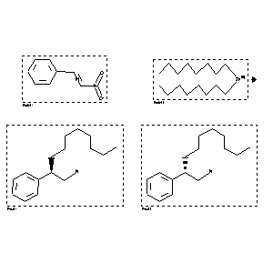

 |
| FA | RX(1); FLST(1); RX(1) |
Reaction (1 of 1)
| Reaction ID | 4151426 |
| Reactant BRN | 1210066; 4126466 |
| Reactant | (2-nitro-vinyl)-benzene; Dioctyl-zink |
| Product BRN | 7250118; 7250119 |
| Product | (R)-2-phenyl-decylamine; (S)-2-phenyl-decylamine |
| No. of Reaction Details | 1 |
Reaction Details (1 of 1)
| Reaction Classification | Preparation |
| Reagent | 1.) (R,R)-Ti-TADDOLate; 3.) H2 |
| Catalyst | 3.) Raney-Ni W2 |
| Other Conditions | 1.) toluene, -90 deg C; 2.) toluene, -90 deg C, then -75 deg C, 6 h; 3.) ethanol, 30 bar, r.t., 24 h |
| Comment | Yield given. Multistep reaction. Yields of byproduct given. Title compound not separated from byproducts |
| Citation Pointer | 5954642; Journal; Schaefer, Harald; Seebach, Dieter; TETRAB; Tetrahedron; EN; 51; 8; 1995; 2305-2324; |
Reference (1 of 1)
| Citation Number | 5954642 |
| Document Type | Journal |
| Authors | Schaefer, Harald; Seebach, Dieter |
| CODEN | TETRAB |
| Journal Title | Tetrahedron |
| Language Code | EN |
| (Series) Volume | 51 |
| Number | 8 |
| Publication Year | 1995 |
| Page | 2305-2324 |